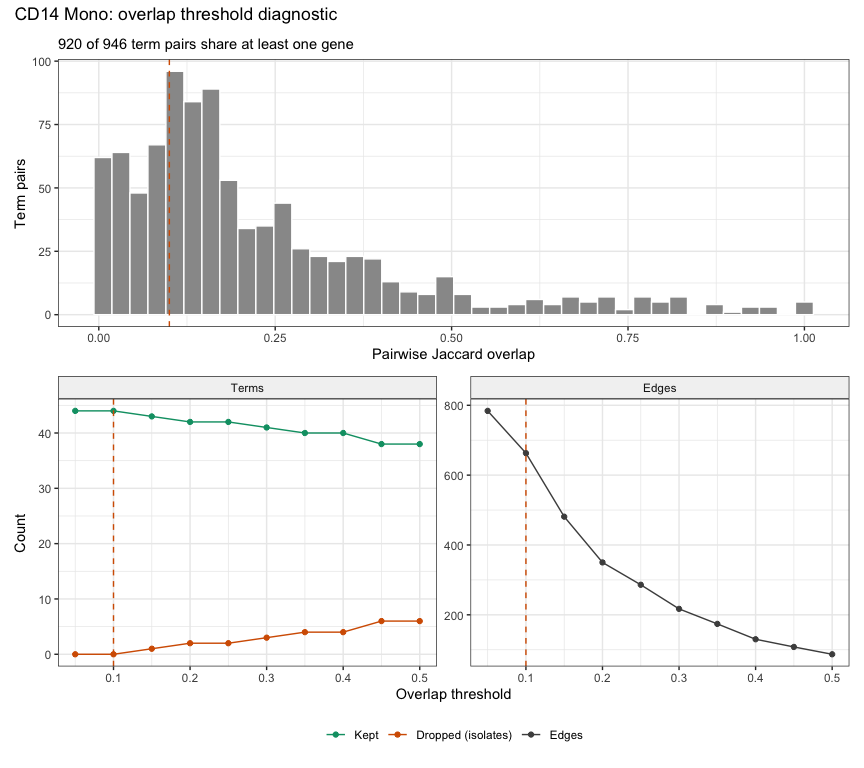
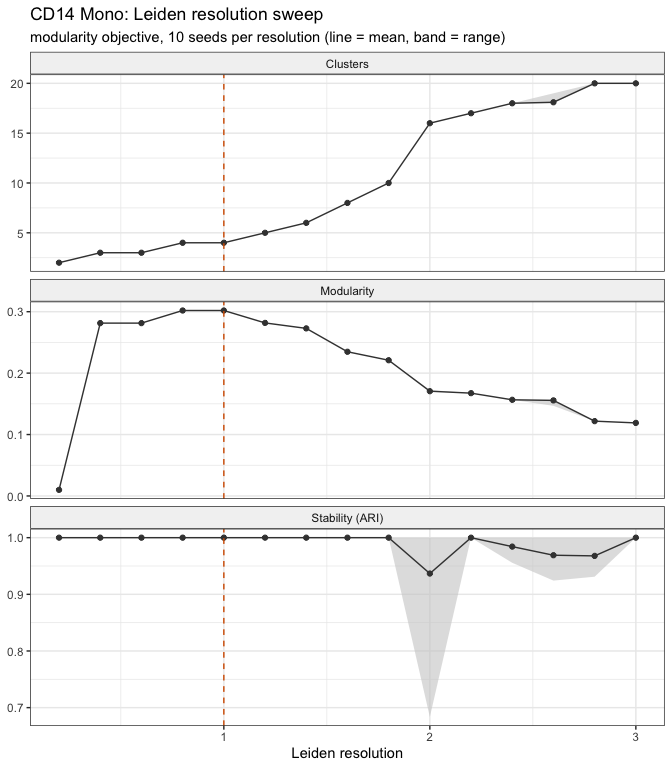
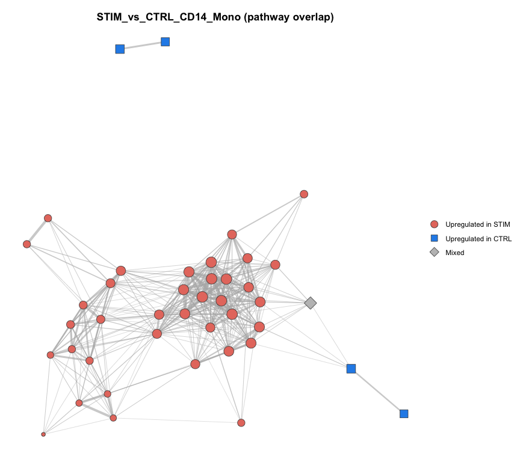
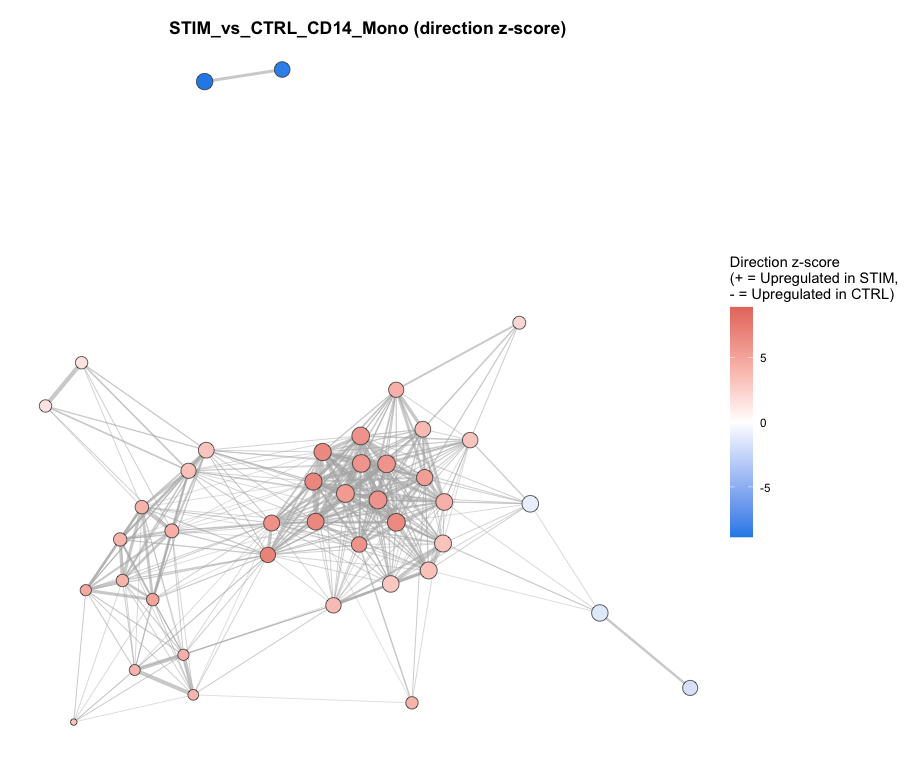
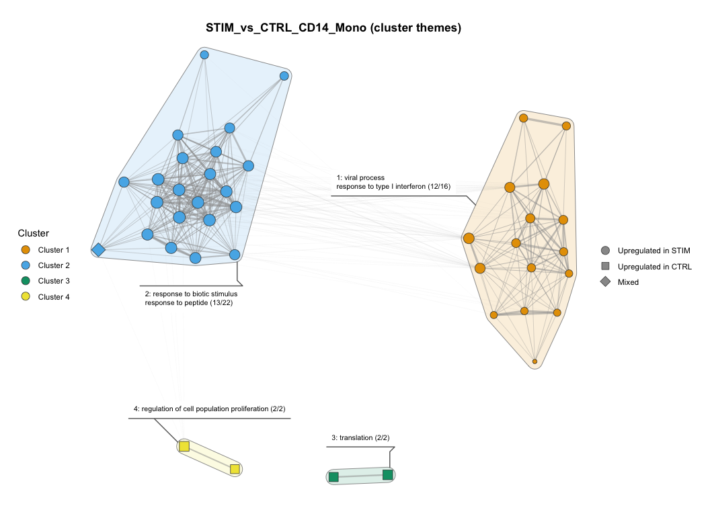
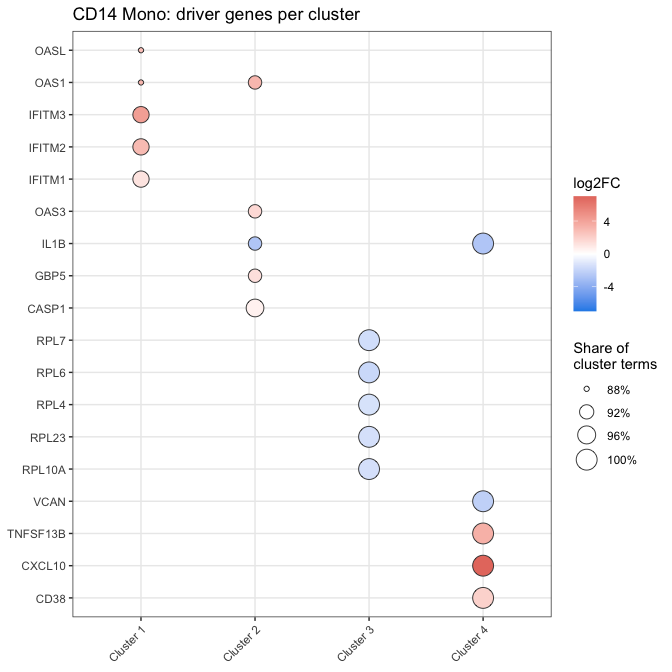
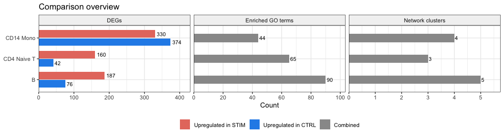
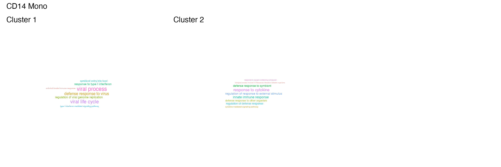
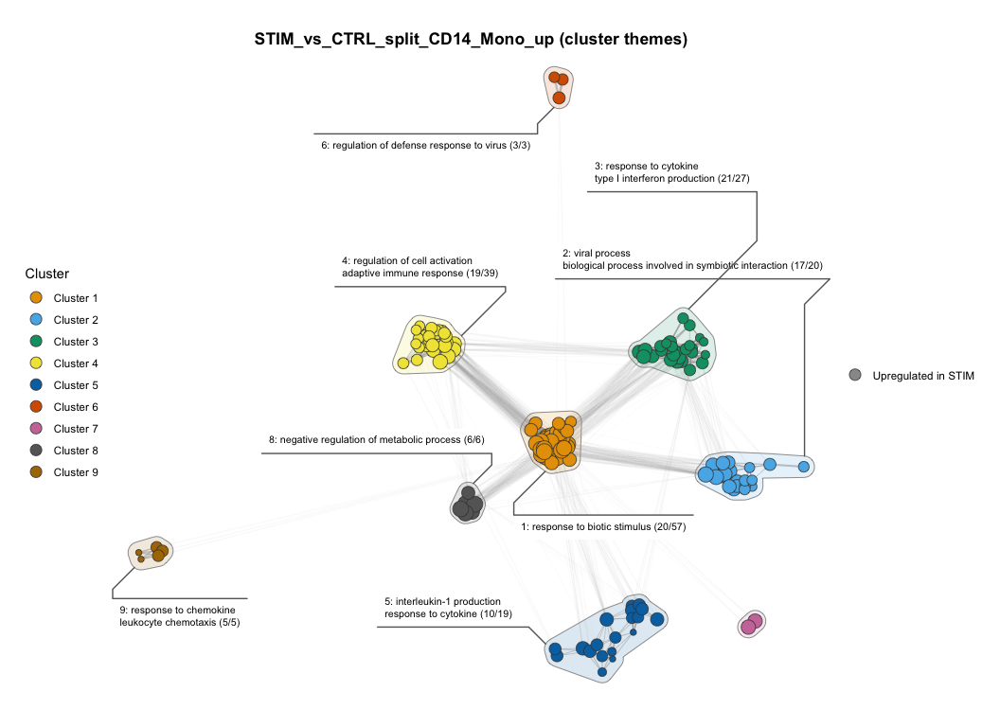

This vignette runs the full scoranet workflow on a real
dataset and shows every kind of output it produces: console summaries,
result tables, files written to disk, network plots, and diagnostic
figures.
The data are the interferon-beta stimulated PBMCs from Kang et
al. (2018), Nature Biotechnology 36, 89-94, distributed as
ifnb by the SeuratData package.
Interferon-beta triggers a strong, well-characterised antiviral
response, which makes it a good test: the workflow should recover
interferon signalling in every cell type.
Setup
data("ifnb")
ifnb <- UpdateSeuratObject(ifnb)
ifnb <- NormalizeData(ifnb, verbose = FALSE)
table(ifnb$seurat_annotations, ifnb$stim)[c("CD14 Mono", "CD4 Naive T", "B"), ]
#>
#> CTRL STIM
#> CD14 Mono 2215 2147
#> CD4 Naive T 978 1526
#> B 407 571We compare stimulated (STIM) against control
(CTRL) cells in three cell types. All output files go to a
temporary folder.
1. Differential expression
run_cluster_de() runs Seurat::FindMarkers()
within each cell type and prints a short summary per cluster.
de_results <- run_cluster_de(
obj = ifnb,
clusters = cell_types,
cluster_col = "seurat_annotations",
ident_col = "stim",
ident1 = "STIM",
ident2 = "CTRL"
)
#> i Running DE for "CD14 Mono" (STIM vs CTRL)
#> v Running DE for "CD14 Mono" (STIM vs CTRL) [5.8s]
#>
#> * Tested genes: 1408
#> * DEGs: 704
#> * Up in STIM: 330
#> * Up in CTRL: 374
#>
#> i Running DE for "CD4 Naive T" (STIM vs CTRL)
#> v Running DE for "CD4 Naive T" (STIM vs CTRL) [870ms]
#>
#> * Tested genes: 526
#> * DEGs: 202
#> * Up in STIM: 160
#> * Up in CTRL: 42
#>
#> i Running DE for "B" (STIM vs CTRL)
#> v Running DE for "B" (STIM vs CTRL) [618ms]
#>
#> * Tested genes: 812
#> * DEGs: 263
#> * Up in STIM: 187
#> * Up in CTRL: 76
#> Each cell type returns two tables: degs (genes passing
the adjusted p-value and fold-change cutoffs) and tested
(every gene FindMarkers tested).
names(de_results[["CD14 Mono"]])
#> [1] "degs" "tested"
c(degs = nrow(de_results[["CD14 Mono"]]$degs),
tested = nrow(de_results[["CD14 Mono"]]$tested))
#> degs tested
#> 704 1408
top_degs <- de_results[["CD14 Mono"]]$degs
top_degs <- top_degs[order(-abs(top_degs$avg_log2FC)), ]
knitr::kable(
head(top_degs[, c("gene", "avg_log2FC", "pct.1", "pct.2", "p_val_adj", "res")], 10),
digits = 3, row.names = FALSE
)| gene | avg_log2FC | pct.1 | pct.2 | p_val_adj | res |
|---|---|---|---|---|---|
| CCL8 | 7.068 | 0.918 | 0.017 | 0 | Upregulated in STIM |
| CXCL10 | 7.014 | 0.984 | 0.035 | 0 | Upregulated in STIM |
| ISG15 | 6.342 | 1.000 | 0.324 | 0 | Upregulated in STIM |
| APOBEC3B | 5.151 | 0.312 | 0.039 | 0 | Upregulated in STIM |
| CXCL11 | 5.087 | 0.932 | 0.012 | 0 | Upregulated in STIM |
| TNFSF10 | 4.989 | 0.989 | 0.047 | 0 | Upregulated in STIM |
| IFIT3 | 4.976 | 0.992 | 0.056 | 0 | Upregulated in STIM |
| IFIT1 | 4.965 | 0.985 | 0.033 | 0 | Upregulated in STIM |
| RSAD2 | 4.949 | 0.988 | 0.045 | 0 | Upregulated in STIM |
| IFIT2 | 4.765 | 0.961 | 0.039 | 0 | Upregulated in STIM |
The strongest changes are classic interferon-stimulated genes and chemokines (CCL8, CXCL10, ISG15, and the IFIT family), exactly what interferon-beta should induce. CD14 monocytes respond most strongly: about half of their tested genes are DEGs.
write_de() saves both tables per cell type:
write_de(de_results, outSubDir = paste0(out_dir, "/DE/"))
list.files(file.path(out_dir, "DE"))
#> [1] "B_DE_Results.csv" "B_tested_genes.csv"
#> [3] "CD14_Mono_DE_Results.csv" "CD14_Mono_tested_genes.csv"
#> [5] "CD4_Naive_T_DE_Results.csv" "CD4_Naive_T_tested_genes.csv"2. GO over-representation analysis
run_go_ora() runs
clusterProfiler::enrichGO() on each cell type’s DEGs. Here
each cell type’s tested genes are used as its background
(use_tested_universe = TRUE), because genes that were never
tested could not have been DEGs.
go_results <- run_go_ora(
de_list = de_results,
org_db = org.Hs.eg.db,
use_tested_universe = TRUE,
ont = "BP",
outputDir = paste0(out_dir, "/ORA/")
)
#>
#>
#> -- GO set: CD14 Mono --
#>
#> Genesets tested: 2846
#> After filtering: 44
#> Retention proportion: 0.015
#>
#> -- GO set: CD4 Naive T --
#>
#> Genesets tested: 1520
#> After filtering: 65
#> Retention proportion: 0.043
#>
#> -- GO set: B --
#>
#> Genesets tested: 1940
#> After filtering: 90
#> Retention proportion: 0.046Each element is a standard clusterProfiler
enrichResult:
go_cd14 <- as.data.frame(go_results[["CD14 Mono"]])
knitr::kable(
head(go_cd14[, c("Description", "GeneRatio", "BgRatio", "p.adjust", "Count")], 10),
digits = 8, row.names = FALSE
)| Description | GeneRatio | BgRatio | p.adjust | Count |
|---|---|---|---|---|
| response to virus | 83/640 | 103/1279 | 0.00000007 | 83 |
| defense response to virus | 68/640 | 81/1279 | 0.00000008 | 68 |
| biological process involved in interspecies interaction between organisms | 183/640 | 286/1279 | 0.00005110 | 183 |
| defense response | 182/640 | 286/1279 | 0.00008025 | 182 |
| response to external biotic stimulus | 168/640 | 262/1279 | 0.00008960 | 168 |
| response to other organism | 168/640 | 262/1279 | 0.00008960 | 168 |
| response to peptide | 124/640 | 184/1279 | 0.00008960 | 124 |
| response to cytokine | 123/640 | 183/1279 | 0.00010361 | 123 |
| defense response to other organism | 140/640 | 213/1279 | 0.00010361 | 140 |
| cytoplasmic translation | 73/640 | 99/1279 | 0.00014460 | 73 |
The top terms are antiviral and cytokine responses.
A QC summary of how many gene sets were tested and retained is written for each run:
| set | tested | retained | prop |
|---|---|---|---|
| CD14 Mono | 2846 | 44 | 0.015 |
| CD4 Naive T | 1520 | 65 | 0.043 |
| B | 1940 | 90 | 0.046 |
CD14 monocytes have the most DEGs but the fewest enriched terms. With the tested-gene background, half of their background genes are DEGs, so a term needs a very large share of DEGs to stand out. This is the tested-gene universe being appropriately conservative, not a lack of signal.
write_go() saves the results, adding numeric gene-ratio
columns:
write_go(go_results, outSubDir = paste0(out_dir, "/ORA/"))
list.files(file.path(out_dir, "ORA"))
#> [1] "B_GO_ORA_Results.csv" "CD14_Mono_GO_ORA_Results.csv"
#> [3] "CD4_Naive_T_GO_ORA_Results.csv" "GO_ORA_QC_summary.csv"3. Choosing network settings
Before building the final networks, the diagnostics show how the overlap threshold and Leiden resolution shape them. A first pass at the default settings is enough to run them (the console summary is hidden here).
net_default <- run_comparison_networks(
go_list = go_results,
de_list = de_results,
comp_label = "STIM_vs_CTRL",
base_outdir = paste0(out_dir, "/default/")
)
dx_default <- run_network_diagnostics(net_default, de_results, go_results)Overlap threshold
Two GO terms are connected when the Jaccard overlap of their DE genes
is at least overlap_threshold; terms with no connection are
dropped.
dx_default$networks[["CD14 Mono"]]$overlap_threshold
plot of chunk diag-threshold
Almost every pair of enriched terms shares at least one gene, and
many share only a few. Raising the threshold from the default 0.1 to 0.2
roughly halves the number of edges while dropping only two terms, so we
use 0.2. See DIAGNOSTICS.md in the package repository for a
full guide to reading these figures.
4. Pathway overlap networks
We rebuild the networks with the chosen threshold.
net_results <- run_comparison_networks(
go_list = go_results,
de_list = de_results,
comp_label = "STIM_vs_CTRL",
base_outdir = paste0(out_dir, "/"),
overlap_threshold = 0.2,
leiden_resolution = 1,
theme_min_terms = 2
)
names(net_results)
#> [1] "CD14 Mono" "CD4 Naive T" "B"Leiden resolution
With the threshold settled, the resolution sweep checks the clustering:
dx <- run_network_diagnostics(net_results, de_results, go_results)
dx$networks[["CD14 Mono"]]$leiden_sweep
plot of chunk diag-sweep
A good resolution sits on a plateau where the cluster count is steady, modularity is high, and stability (agreement between random seeds) is close to 1. Here the default resolution of 1 sits at the modularity peak with perfect stability, so we keep it. Modularity is modest because nearly every term in this network is part of one connected interferon response.
If the sweep pointed to a different resolution,
recluster_network() would re-run Leiden on the existing
network without rebuilding it, keeping the node layout so plots before
and after are directly comparable:
net_fine <- recluster_network(net_results[["CD14 Mono"]], resolution = 1.5)
net_fine$cluster_stats
#> cluster avg_degree n_terms
#> 1 1 30.50000 2
#> 2 2 20.85714 7
#> 3 3 20.50000 4
#> 4 4 25.66667 3
#> 5 5 1.00000 2
#> 6 6 13.35714 14
#> 7 7 10.33333 3
#> 8 8 16.28571 7Each network result holds the igraph object, tables of
terms and clusters, the settings used, and the node layout.
plot_network() draws it as one of four editable
ggplot objects: regulation,
leiden, zscore or themes.
net <- net_results[["CD14 Mono"]]
net
#> <scoranet_network> STIM_vs_CTRL_CD14_Mono
#> Nodes: 42 Edges: 350 Clusters: 4
#> Leiden resolution: 1 (modularity) Overlap threshold: 0.2
#> Plot with plot_network(); tables with network_tables().
names(net)
#> [1] "network" "clustering" "overlap_matrix" "go_term_df"
#> [5] "cluster_stats" "leiden_resolution" "objective_function" "overlap_threshold"
#> [9] "seed" "term_genes" "cluster_themes" "cluster_palette"
#> [13] "layout" "collection_name" "ident1" "ident2"
#> [17] "file_stem" "theme_args"Direction
Nodes are GO terms, coloured by whether their DE genes go up in
STIM (red), up in CTRL (blue), or both (grey,
“mixed”). Edge width shows overlap; node size shows the number of DE
genes in the term. Almost the whole network is red: stimulation switches
on the antiviral program.
plot_network(net, "regulation")
plot of chunk plot-regulation
The zscore plot shows how strongly each term leans one
way, on a continuous scale. The darkest red terms are the core defence
and innate immune terms of the interferon response. The four blue terms,
up in CTRL, form the two small clusters (translation and
the broad proliferation terms); one pale term in the immune cluster is
mixed, with about as many genes going up as down.
plot_network(net, "zscore")
plot of chunk plot-zscore
Cluster themes
The themes plot outlines each Leiden cluster and labels
it with the GO terms its members fall under in the GO hierarchy, with
how many of the cluster’s terms they cover. The two large clusters
separate the direct antiviral response (viral process, response to type
I interferon) from the broader innate immune response. Of the two small
clusters, translation is clearly down in STIM. The other
holds two broad “regulation of cell population proliferation” terms; it
leans only weakly down and is built from cytokine, chemokine and matrix
genes that carry proliferation annotations (see the driver genes below),
so it is better read as an annotation catch-all than as a change in
proliferation.
plot_network(net, "themes", min_terms = 2)
plot of chunk plot-themes
The labels are also available as a table, along with alternative
label styles (keywords, phrase,
hub, chosen in the plot with label_by):
knitr::kable(net$cluster_themes[, c("cluster", "n_terms", "ancestor",
"ancestor_n_covered", "hub")])| cluster | n_terms | ancestor | ancestor_n_covered | hub |
|---|---|---|---|---|
| 1 | 16 | viral process / response to type I interferon | 12 | defense response to virus |
| 2 | 22 | response to biotic stimulus / response to peptide | 13 | innate immune response |
| 3 | 2 | translation | 2 | cytoplasmic translation |
| 4 | 2 | regulation of cell population proliferation | 2 | regulation of cell population proliferation |
Term-level results
go_term_df lists every term in the network with its
cluster and direction statistics. It is also saved, with each term’s DE
genes, as <cell type>-cluster-membership.csv, and the
cluster labels as <cell type>-cluster-themes.csv.
network_tables(net) returns every saved table in R:
knitr::kable(
head(net$go_term_df[order(-net$go_term_df$degree),
c("go_term", "cluster", "degree", "regulation",
"n_up", "n_down", "zscore", "median_log2FC")], 8),
digits = 2, row.names = FALSE
)| go_term | cluster | degree | regulation | n_up | n_down | zscore | median_log2FC |
|---|---|---|---|---|---|---|---|
| defense response to virus | 1 | 31 | up | 63 | 5 | 7.03 | 1.24 |
| response to virus | 1 | 30 | up | 69 | 14 | 6.04 | 1.19 |
| innate immune response | 2 | 28 | up | 94 | 22 | 6.69 | 1.00 |
| defense response to symbiont | 2 | 25 | up | 106 | 28 | 6.74 | 1.00 |
| biological process involved in interspecies interaction between organisms | 2 | 24 | up | 129 | 54 | 5.54 | 0.84 |
| defense response to other organism | 2 | 24 | up | 109 | 31 | 6.59 | 1.00 |
| immune response | 2 | 24 | up | 129 | 44 | 6.46 | 0.86 |
| regulation of response to external stimulus | 2 | 24 | up | 81 | 35 | 4.27 | 0.80 |
5. Interpreting modules
Driver genes
Which genes is each cluster built on?
dx$networks[["CD14 Mono"]]$driver_genes
plot of chunk diag-drivers
The antiviral cluster is built on the OAS and IFITM
families. The innate immune cluster shares OAS1 and
OAS3 and adds GBP5 and CASP1, all up in
STIM. IL1B also runs through most of its terms but
goes down (log2FC about -2.7): type I interferon is
known to suppress IL-1β production (Guarda et al. 2011,
Immunity), so this module is an interferon-driven innate
response, not an IL-1β-driven one. The translation cluster is built on
ribosomal protein genes that go down after stimulation, and the small
“proliferation” cluster on CXCL10, TNFSF13B and
CD38 (up) with IL1B and VCAN (down).
Overview across cell types
dx$overview
plot of chunk diag-overview
CD14 monocytes have by far the most DEGs, split almost evenly between directions, while the T and B cells respond mostly upward.
Word clouds
write_cluster_wordclouds_patchwork() saves a word cloud
of term names for each cluster:
write_cluster_wordclouds_patchwork(
net_list = net_results["CD14 Mono"],
outputDir = paste0(out_dir, "/"),
comparison = "STIM_vs_CTRL"
)
plot of chunk wordclouds-include
Terms in one module
write_cluster_results() returns every term in the same
cluster as a term of interest. Here, the module containing the most
connected term:
top_term <- net$go_term_df$go_term[which.max(net$go_term_df$degree)]
top_term
#> [1] "defense response to virus"
module <- write_cluster_results(net, go_term = top_term, outdir = NULL)
knitr::kable(head(module[, c("go_term", "cluster", "degree", "regulation")], 10),
row.names = FALSE)| go_term | cluster | degree | regulation |
|---|---|---|---|
| response to virus | 1 | 30 | up |
| defense response to virus | 1 | 31 | up |
| viral life cycle | 1 | 20 | up |
| viral process | 1 | 20 | up |
| regulation of viral process | 1 | 19 | up |
| regulation of viral life cycle | 1 | 18 | up |
| viral genome replication | 1 | 14 | up |
| regulation of viral genome replication | 1 | 14 | up |
| antiviral innate immune response | 1 | 7 | up |
| response to type I interferon | 1 | 13 | up |
6. Splitting by direction
With split_direction = TRUE, ORA runs separately on up-
and down-regulated genes, and a network is built for each direction.
Each test is then made against fewer, more coherent genes, which helps
in two cases: when one direction has far fewer DEGs and would be drowned
out by the other, and, as here, when DEGs make up a large share of the
background (half of the tested genes in CD14 monocytes, see Section 2),
which dilutes a combined test. Every module in a split network also has
a single direction.
go_split <- run_go_ora(
de_list = de_results["CD14 Mono"],
org_db = org.Hs.eg.db,
use_tested_universe = TRUE,
split_direction = TRUE,
outputDir = paste0(out_dir, "/ORA_split/")
)
net_split <- run_comparison_networks(
go_list = go_split,
de_list = de_results,
comp_label = "STIM_vs_CTRL_split",
base_outdir = paste0(out_dir, "/"),
overlap_threshold = 0.2,
split_direction = TRUE
)
names(net_split)
#> [1] "CD14 Mono_up" "CD14 Mono_down"
plot_network(net_split[["CD14 Mono_up"]], "themes")
plot of chunk split-up
Built from the up-regulated genes alone, the CD14 monocyte response resolves into many distinct modules: type I interferon production, interleukin-1 production, chemokine response and leukocyte chemotaxis, adaptive immune activation, and more. Most of these terms were not enriched in the combined analysis at all: it found 44 enriched terms, while the up-regulated genes alone give 178. The interleukin-1 production module reflects regulators of IL-1 that go up (such as GBP5 and CASP1), not IL1B itself, which goes down.
The down-regulated genes give a much smaller network of 5 terms (translation and ribosome biogenesis), the same signal as the translation cluster in the combined network.
7. Files written
Everything the workflow saved to disk:
files <- list.files(out_dir, recursive = TRUE)
files[!grepl("^default/", files)]
#> [1] "DE/B_DE_Results.csv"
#> [2] "DE/B_tested_genes.csv"
#> [3] "DE/CD14_Mono_DE_Results.csv"
#> [4] "DE/CD14_Mono_tested_genes.csv"
#> [5] "DE/CD4_Naive_T_DE_Results.csv"
#> [6] "DE/CD4_Naive_T_tested_genes.csv"
#> [7] "ORA/B_GO_ORA_Results.csv"
#> [8] "ORA/CD14_Mono_GO_ORA_Results.csv"
#> [9] "ORA/CD4_Naive_T_GO_ORA_Results.csv"
#> [10] "ORA/GO_ORA_QC_summary.csv"
#> [11] "ORA_split/GO_ORA_QC_summary.csv"
#> [12] "STIM_vs_CTRL/networks/B-cluster-membership.csv"
#> [13] "STIM_vs_CTRL/networks/B-cluster-stats.csv"
#> [14] "STIM_vs_CTRL/networks/B-cluster-themes.csv"
#> [15] "STIM_vs_CTRL/networks/B-clustered-leiden.png"
#> [16] "STIM_vs_CTRL/networks/B-regulation.png"
#> [17] "STIM_vs_CTRL/networks/B-themes.png"
#> [18] "STIM_vs_CTRL/networks/B-zscore.png"
#> [19] "STIM_vs_CTRL/networks/B_network_summary.csv"
#> [20] "STIM_vs_CTRL/networks/CD14_Mono-cluster-membership.csv"
#> [21] "STIM_vs_CTRL/networks/CD14_Mono-cluster-stats.csv"
#> [22] "STIM_vs_CTRL/networks/CD14_Mono-cluster-themes.csv"
#> [23] "STIM_vs_CTRL/networks/CD14_Mono-clustered-leiden.png"
#> [24] "STIM_vs_CTRL/networks/CD14_Mono-regulation.png"
#> [25] "STIM_vs_CTRL/networks/CD14_Mono-themes.png"
#> [26] "STIM_vs_CTRL/networks/CD14_Mono-zscore.png"
#> [27] "STIM_vs_CTRL/networks/CD14_Mono_all_clusters_wordclouds.png"
#> [28] "STIM_vs_CTRL/networks/CD14_Mono_network_summary.csv"
#> [29] "STIM_vs_CTRL/networks/CD4_Naive_T-cluster-membership.csv"
#> [30] "STIM_vs_CTRL/networks/CD4_Naive_T-cluster-stats.csv"
#> [31] "STIM_vs_CTRL/networks/CD4_Naive_T-cluster-themes.csv"
#> [32] "STIM_vs_CTRL/networks/CD4_Naive_T-clustered-leiden.png"
#> [33] "STIM_vs_CTRL/networks/CD4_Naive_T-regulation.png"
#> [34] "STIM_vs_CTRL/networks/CD4_Naive_T-themes.png"
#> [35] "STIM_vs_CTRL/networks/CD4_Naive_T-zscore.png"
#> [36] "STIM_vs_CTRL/networks/CD4_Naive_T_network_summary.csv"
#> [37] "STIM_vs_CTRL_split/networks/CD14_Mono_down-cluster-membership.csv"
#> [38] "STIM_vs_CTRL_split/networks/CD14_Mono_down-cluster-stats.csv"
#> [39] "STIM_vs_CTRL_split/networks/CD14_Mono_down-cluster-themes.csv"
#> [40] "STIM_vs_CTRL_split/networks/CD14_Mono_down-clustered-leiden.png"
#> [41] "STIM_vs_CTRL_split/networks/CD14_Mono_down-regulation.png"
#> [42] "STIM_vs_CTRL_split/networks/CD14_Mono_down-themes.png"
#> [43] "STIM_vs_CTRL_split/networks/CD14_Mono_down-zscore.png"
#> [44] "STIM_vs_CTRL_split/networks/CD14_Mono_down_network_summary.csv"
#> [45] "STIM_vs_CTRL_split/networks/CD14_Mono_up-cluster-membership.csv"
#> [46] "STIM_vs_CTRL_split/networks/CD14_Mono_up-cluster-stats.csv"
#> [47] "STIM_vs_CTRL_split/networks/CD14_Mono_up-cluster-themes.csv"
#> [48] "STIM_vs_CTRL_split/networks/CD14_Mono_up-clustered-leiden.png"
#> [49] "STIM_vs_CTRL_split/networks/CD14_Mono_up-regulation.png"
#> [50] "STIM_vs_CTRL_split/networks/CD14_Mono_up-themes.png"
#> [51] "STIM_vs_CTRL_split/networks/CD14_Mono_up-zscore.png"
#> [52] "STIM_vs_CTRL_split/networks/CD14_Mono_up_network_summary.csv"Session information
sessionInfo()
#> R version 4.4.1 (2024-06-14)
#> Platform: aarch64-apple-darwin20
#> Running under: macOS Sonoma 14.6
#>
#> Matrix products: default
#> BLAS: /Library/Frameworks/R.framework/Versions/4.4-arm64/Resources/lib/libRblas.0.dylib
#> LAPACK: /Library/Frameworks/R.framework/Versions/4.4-arm64/Resources/lib/libRlapack.dylib; LAPACK version 3.12.0
#>
#> locale:
#> [1] C
#>
#> time zone: America/New_York
#> tzcode source: internal
#>
#> attached base packages:
#> [1] stats4 stats graphics grDevices utils datasets methods base
#>
#> other attached packages:
#> [1] org.Hs.eg.db_3.20.0 AnnotationDbi_1.68.0 IRanges_2.40.1
#> [4] S4Vectors_0.44.0 Biobase_2.66.0 BiocGenerics_0.52.0
#> [7] pbmc3k.SeuratData_3.1.4 ifnb.SeuratData_3.1.0 SeuratData_0.2.1
#> [10] SeuratObject_4.1.4 Seurat_4.4.0 scoranet_1.0.0
#>
#> loaded via a namespace (and not attached):
#> [1] RcppAnnoy_0.0.22 splines_4.4.1 later_1.4.4
#> [4] ggplotify_0.1.2 tibble_3.3.0 R.oo_1.27.1
#> [7] polyclip_1.10-7 lifecycle_1.0.4 globals_0.18.0
#> [10] lattice_0.22-7 MASS_7.3-65 magrittr_2.0.4
#> [13] limma_3.60.6 plotly_4.11.0 httpuv_1.6.16
#> [16] sctransform_0.4.2 sp_2.2-0 spatstat.sparse_3.1-0
#> [19] reticulate_1.43.0 cowplot_1.2.0 pbapply_1.7-4
#> [22] DBI_1.2.3 RColorBrewer_1.1-3 abind_1.4-8
#> [25] zlibbioc_1.52.0 Rtsne_0.17 purrr_1.1.0
#> [28] R.utils_2.13.0 ggraph_2.2.2 yulab.utils_0.2.0
#> [31] tweenr_2.0.3 rappdirs_0.3.3 GenomeInfoDbData_1.2.13
#> [34] enrichplot_1.24.4 ggrepel_0.9.6 irlba_2.3.5.1
#> [37] listenv_0.9.1 spatstat.utils_3.1-5 tidytree_0.4.6
#> [40] goftest_1.2-3 spatstat.random_3.4-1 fitdistrplus_1.2-4
#> [43] parallelly_1.45.1 commonmark_2.0.0 ggwordcloud_0.6.2
#> [46] leiden_0.4.3.1 codetools_0.2-20 DOSE_4.0.1
#> [49] xml2_1.4.0 ggforce_0.5.0 tidyselect_1.2.1
#> [52] aplot_0.2.8 UCSC.utils_1.2.0 farver_2.1.2
#> [55] viridis_0.6.5 matrixStats_1.5.0 spatstat.explore_3.5-2
#> [58] jsonlite_2.0.0 tidygraph_1.3.1 progressr_0.15.1
#> [61] ggridges_0.5.7 survival_3.8-3 systemfonts_1.3.1
#> [64] tools_4.4.1 ragg_1.5.0 treeio_1.28.0
#> [67] ica_1.0-3 Rcpp_1.1.0 glue_1.8.0
#> [70] gridExtra_2.3 xfun_0.53 qvalue_2.36.0
#> [73] GenomeInfoDb_1.42.3 dplyr_1.1.4 withr_3.0.2
#> [76] fastmap_1.2.0 litedown_0.7 digest_0.6.37
#> [79] gridGraphics_0.5-1 R6_2.6.1 mime_0.13
#> [82] textshaping_1.0.3 colorspace_2.1-1 scattermore_1.2
#> [85] GO.db_3.20.0 tensor_1.5.1 markdown_2.0
#> [88] dichromat_2.0-0.1 spatstat.data_3.1-8 RSQLite_2.4.2
#> [91] R.methodsS3_1.8.2 tidyr_1.3.1 generics_0.1.4
#> [94] data.table_1.17.8 graphlayouts_1.2.2 httr_1.4.7
#> [97] htmlwidgets_1.6.4 scatterpie_0.2.5 uwot_0.2.3
#> [100] pkgconfig_2.0.3 gtable_0.3.6 blob_1.2.4
#> [103] lmtest_0.9-40 S7_0.2.0 XVector_0.46.0
#> [106] shadowtext_0.1.5 clusterProfiler_4.14.6 htmltools_0.5.8.1
#> [109] fgsea_1.30.0 scales_1.4.0 png_0.1-8
#> [112] spatstat.univar_3.1-4 ggfun_0.2.0 knitr_1.50
#> [115] reshape2_1.4.4 nlme_3.1-168 zoo_1.8-14
#> [118] cachem_1.1.0 stringr_1.5.2 KernSmooth_2.23-26
#> [121] parallel_4.4.1 miniUI_0.1.2 pillar_1.11.1
#> [124] grid_4.4.1 vctrs_0.6.5 RANN_2.6.2
#> [127] promises_1.3.3 xtable_1.8-4 cluster_2.1.8.1
#> [130] evaluate_1.0.5 cli_3.6.5 compiler_4.4.1
#> [133] rlang_1.1.6 crayon_1.5.3 future.apply_1.11.2
#> [136] labeling_0.4.3 plyr_1.8.9 fs_1.6.6
#> [139] stringi_1.8.7 viridisLite_0.4.2 deldir_2.0-4
#> [142] BiocParallel_1.40.2 Biostrings_2.74.1 lazyeval_0.2.2
#> [145] spatstat.geom_3.5-0 GOSemSim_2.32.0 Matrix_1.7-3
#> [148] patchwork_1.3.2 bit64_4.6.0-1 future_1.33.2
#> [151] ggplot2_4.0.0 KEGGREST_1.44.1 statmod_1.5.0
#> [154] shiny_1.11.1 ROCR_1.0-11 gridtext_0.1.5
#> [157] igraph_2.1.4 memoise_2.0.1 ggtree_3.12.0
#> [160] fastmatch_1.1-6 bit_4.6.0 gson_0.1.0
#> [163] ape_5.8-1